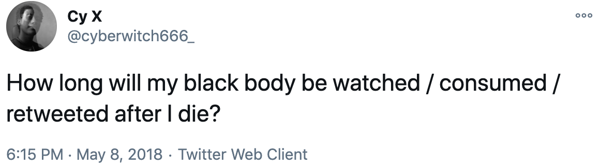
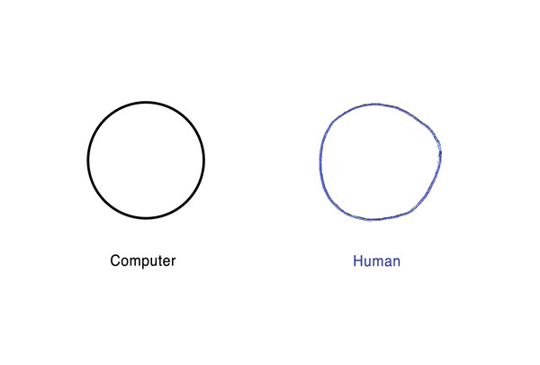
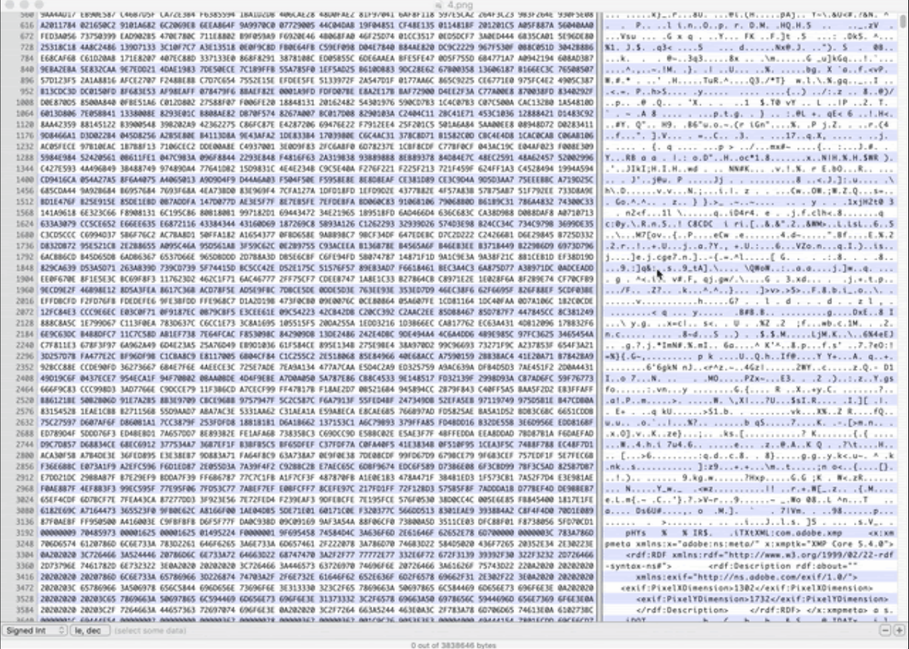

DATABENDING EXPLORATION
On May 8th, I tweeted "How long will my black body be watched / consumed / retweeted after I die?"
This question was hinting at a certain anxiety around my imagery and its relation to death, particularly, due to the black death imagery that was circulating on every social media feed I was on.
Why must we circulate these images of murders and violent killings in order for people to finally believe that BLACK LIVES MATTER?
For months, I had been confronted with death like the video of Stephon Clark murdered by police in Sacramento, California and was reminded of all the many other videos I had seen reposted, tweeted, and nudged in between selfies on Instagram Stories. Without warning. Without consent. I was forced to confront my own death (both impending and current). I imagine no one could have predicted the impending virality of their deaths or perhaps more specifically their images. Their multitudinous condensed into imagery, pixels that were supposedly used as an alchemic process toward supposed changed.
Again, why must we circulate these images of murders and violent killings in order for people to finally believe that BLACK LIVES MATTER?
Seeing is believing, they say. So retweet away.
And even then...
And even then...
In January 2020, I participated in The School for Poetic Computation's Code Society and took a class called "The Fuzzy Edges of Character Encoding" taught by Everest Pipkin, a drawing, game, and software artist. There I was exposed to the history of how computers communicate and how we communicate through computers to each other. But what really stood out to me was the fact that everything on the computer is connected to a set of numbers. Even these words on your screen right now. Even the images. Even the images of black death.
Thinking about the anxiety I had surrounding my images, my death, and the circulation and consumption of my body, I wondered, What then kind of file is the body? What kind of file am I?
What is the difference between me and a computer or more specifically, me and my code?
My general approach to a question is to explore the possibilities of an answer through art, software, movement, writing, conversation, or whatever seems fit for the question. For these questions above, I decided to move through the process of data-bending using an image of myself. To figure out who I was in comparison to my code, I needed to go through the process of uploading and visualizing the self that my computer companion sees and ultimately what others see when viewing me on screen.
Data Bending is the process where you upload one file in a program that was designed to open another kind of file. An example of this would be opening a MP3 file in Photoshop, a program meant for images.
What kind of file am I and what program was designed to open me? It feels like any attempt to upload myself would result in databending.
To begin, I opened a selfie of myself in a hex editor, an editor that allows you to see the binary data of a file, to experience the process of looking and truly seeing my guts - a conglomeration of numbers and symbols.
Technically, we are seeing both the binary and ASCII representation of each of the bytes on the right-hand side.
ASCII: American Standard Code for Information Interchange
What's the American Standard Code for blackness?
An editor allows you to edit, to add, to subtract, and to save the changes that are made and create something anew. So I did just that with the code. With each edit, I saved the file and re-opened the image on my desktop to see the results of the change. I did this process over and over until I could not recognize myself anymore.

This process produced many glitches. Eventually I glitched the file to the point of it not being able to open. To the point of death.
((Interestingly enough, when I took a screenshot of this, my computer would not stop making the camera shutter noise to the point where it was on loop repeatedly until I turned my computer off. A literal glitch.))
Although this data-bending exercise was a digital exercise, the results feel painfully familiar, a reminder of the small gap or rather non-existant gap between the screen and my AFK being. The glitch is NOT isolated to the screen. It was evident to me, through my bodymind technology, that I knew exactly what a glitch felt like.
What does the everyday glitching process look like? And what I mean is not a glitch in the system such as a tiny inconvenience or tiny error but rather what does the process of adding and removing code to the point of rendering some bodies fully seen and visible and others invisible or visible but legible look like in the everyday?
"A key feature of this work is the understanding that racialized groups are not only the objects of harm and neglect, but that the meaning and power of racial hierarchies are enacted through technoscientific processes." - Captivating Technology, Ruha Benjamin 1
Capitalism understands the benefits of selective incorporation. Through inclusion, it can control. Through creating and mandating a code or a score, it can control. To be "fully seen" oftentimes means to be controlled. So, here I stand in the collapse of space between online and AFK, glitched, enclosed, controlled, incorporated, visible, failing and caring, loving, moving magically through it all.
We know about the glitch.
It’s in the algorithms used to determines the trajectory of a life and the likelihood that someone is supposedly a criminal. Like a magical slight-of-hand trick, humans avoid accountability but embed the racism into numbers and machines. Playing dumb as if we can’t tell who trained them.
We know about the glitch.
It’s in the destroyed archives and records so that I may not find my way back to ancestral technologies. So that, I may be stuck in the colonial linear time, a time systems that mandates I both forget and cannot move forward.
We know about the glitch.
It’s in the epigenetic trauma that resides in my body that I now must dedicate a lifetime to heal. It’s in my corporeal data that remembers every time someone made me feel unworthy, ugly, disposable, worthless, dead. All lies that I have been made to keep. All lies that I no longer want to hold.
LIFE/DEATH
Originally, I wrote that the necessity of this work was because it was a matter of life and death, but borrowing from the scholarship of Christina Elizabeth Sharpe’s In the Wake on Blackness and Being, if we recognize “Black death as a predictable and constitutive aspect of this democracy,” I then therefore intend this collection of spells and spirals to serve as a form of “wake work.”
Wake: the track left on the water’s surface by a ship; the disturbance caused by a body swimming or moved, in water; it is the air currents behind a body in flight; a region of disturbed flow.
Wake; the state of wakefulness; consciousness.
Wake: a watch or vigil held beside the body of someone who has died, sometimes accompanied by ritual observances including eating and drinking.
I’m here to defend the glitched, those that have been glitched to death and those who are dying.
“What does it mean to defend the dead? To tend to the Black dead and dying: to tend to the Black person, to Black people, always living in the push toward our death? It means work. It is work: hard emotional, physical, and intellectual work that demands vigilant attendance to the needs of the dying, to ease their way, and also to the needs of the living.” 2
To do this wake work and to understand black death as normative also helps me to understand the work that I / we must do and directs my attention toward new ways that I can be in a state of wakefulness and consciousness.
To me this requires a move away from incorporation, legibility, and visibility and towards deep listening, care, embodiment, and magic alongside an active rejection of the “answers” of capitalist technofixes and the political state. And to move these thoughts a bit further, it’s also one that motivates me to be in a “permanent readiness for The Marvelous,” a proclamation from Suzanne Césaire, a theorist associated with the négritude movement and with surrealism.